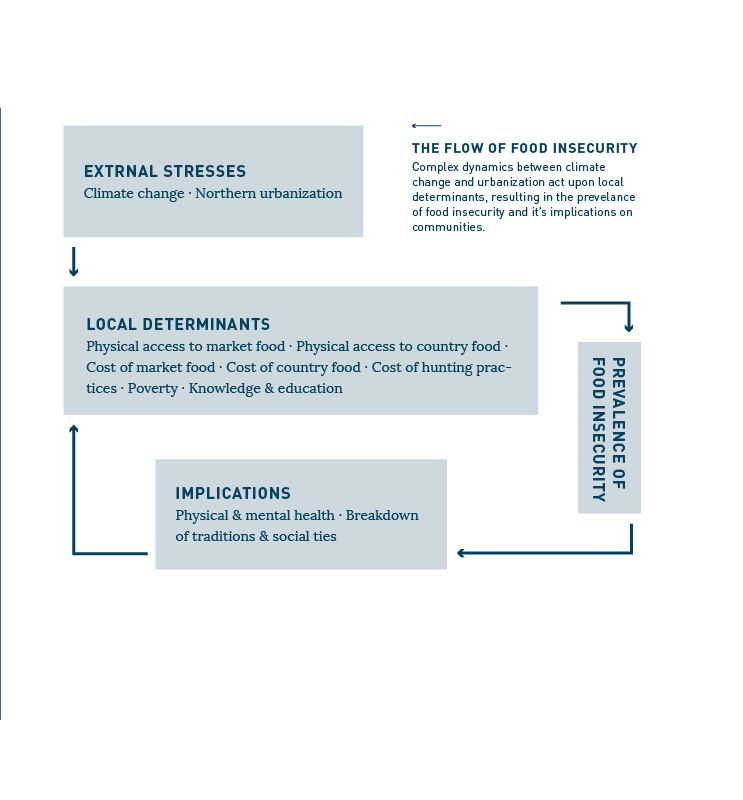
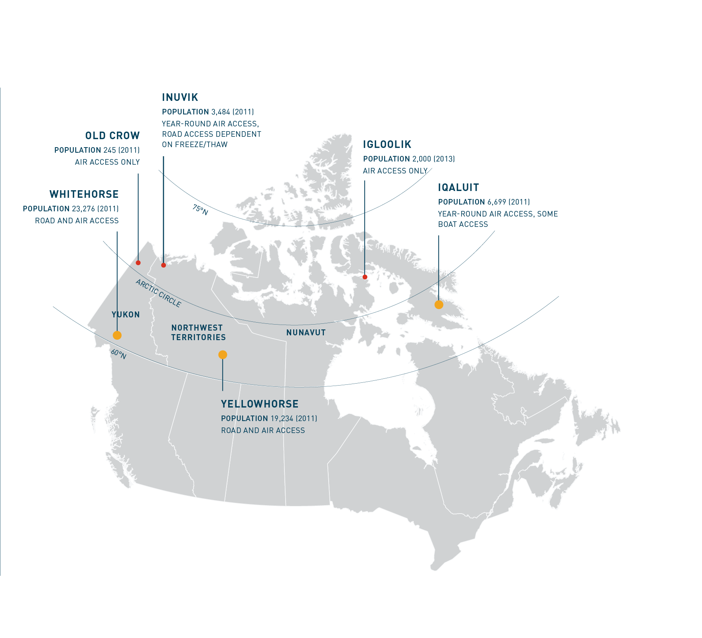
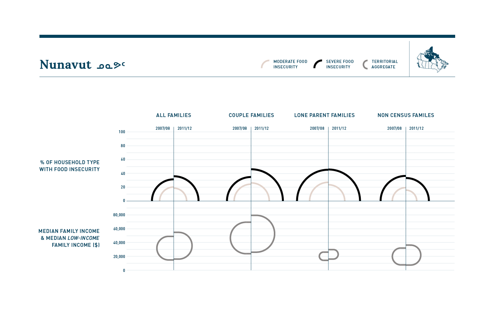

Visualizing Food Insecurity
In Canada’s North
MS Data Visualization Thesis Project by Linnea Lapp

Although Canada has no official measure of poverty, food insecurity is present in households across the country.
Food security exists when an entire population, at all times, has the physical and financial means to access adequate food. Food insecurity exists when these conditions are not met. Northern Canada’s unique geographical and social landscape make it’s residents especially vulnerable to food insecurity. Extreme temperatures, low population density, isolated communities, inconsistent access, and a higher Aboriginal population set the north apart compared to Canada’s south. This visualization attempts to break down the complexity of food insecurity into an organized narrative, in order to establish a foundational knowledge on which to tackle northern Canadian food security in the future.

Located mainly above the 60th parallel; Northern Canada is a vast, sparsely populated landscape. Extreme environmental conditions and great distances between communities make transportation and access difficult.
